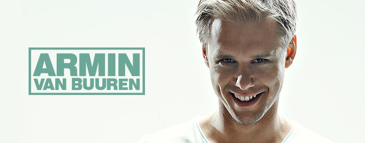

Armin van Buuren ist ein niederländischer Trance-DJ und -Produzent.
Mittlerweile war Armin van Buuren 5 mal auf Platz 1 der DJ Mag Top 100, er ist der erste DJ,
der dies geschafft hat. Aktuell belegt der Niederländer Platz 3.
2014 wurde er für einen Grammy mit This Is What It Feels Like nominiert. Er ist für seine
außergewöhnlichen Shows bekannt, er spielte zum Beispiel mit einem Orchester bei einem offiziellen
Auftritt des holländischen Königshauses.
Armin van Buuren begeisterte bereits letztes Jahr am Salzburgring und von vielen war zu hören,
dass es überhaupt das beste Set am Electric Love Festival 2014 war. Auch er genoss sichtlich seinen
Auftritt und meinte danach: „This was one of the best gigs in this summer and I ́m not saying this to everybody.“